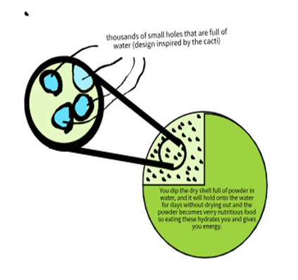

- A way we could create a carrying device that is inspired by an organism would be making some sort of water carrying device inspired by a cactus, specifically the barrel cactus. I think that we can make something that carries water and food at the same time without being too big, so we made a sort of water bottle that you can eat.
- In the Democratic Republic of the Congo
- Our biome is the Sahara Desert, and we chose this because water is a problem there. The Sahara Desert is extremely hot and dry with little life other than a few small animals and plants. There is verry little rain in the Sahara, only raining once every 200 days (about 6 and a half months) or so, the Sahara gets 3 inches of rain per year. There is verry little vegetation in the Sahara due to the tiny amounts of water, some of which are small patches of tall grass, a few palm trees (only around an oasis), and cacti. The Sahara Desert is in north central Africa.
- Our product is a shell that has nutritious powder in it and when you dip the shell in water, the powder reacts to the water and becomes a verry moist food that hydrates you and fills you up like food. The powder is a mix of protein powder, a bit of animal fat, and flour-yeast mixture.
- Our product is biologically inspired by a barrel cactus because when you eat the inside of a barrel cactus you get nutrition and hydration. our product is a shell full of powder that you dip into water and the powder starts a reaction to make a very moist and nutritious bread like substance that hydrates you and has high amounts of carbs and protein
- The reason we picked the barrel cactus is because in nature the cactus can store water and food just like the container we are designing. The barrel cactus is pretty much an edible water bottle, so we made a design a lot like it. How it works is it is a shell with powder in it, you soak the shell in water for around five minutes and the powder reacts and makes a healthy bread like substance full of water, so when you eat one you get hydrated, and you get nutrients.
- The reason we picked the barrel cactus is because in nature the cactus can store water and food just like the container we are designing. The barrel cactus is pretty much an edible water bottle, so we made a design a lot like it. How it works is it is a shell with powder in it, you soak the shell in water for around five minutes and the powder reacts and makes a healthy bread like substance full of water, so when you eat one you get hydrated, and you get nutrients.

{kind=link}